Для подключения интеграции запросите файл с расширением для 1С у вашего менеджера ELMA365. Чтобы начать настройки, перейдите в программу 1С и убедитесь, что она работает в монопольном режиме — к базе имеет доступ только один пользователь.
Установить расширение ELMA365 в 1С
- В программе 1С перейдите в раздел Администрирование и выберите пункт Печатные формы, отчеты и обработки > Расширения.
- В открывшейся странице нажмите Добавить из файла и загрузите файл ELMA.cfe с расширением для 1С, предоставленный менеджером ELMA365.
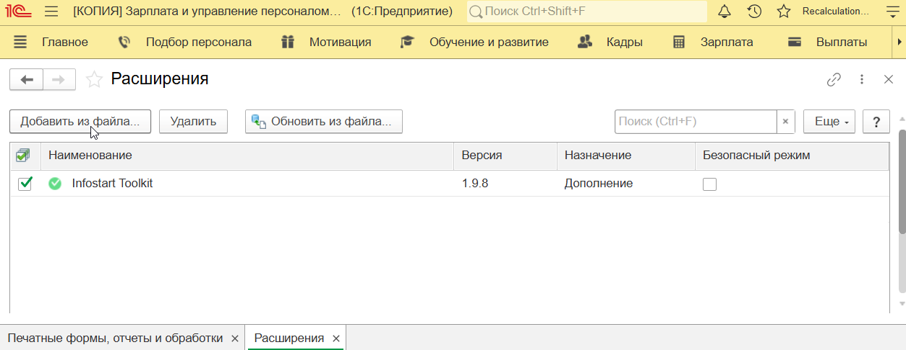
- По окончании загрузки в списке появится расширение ELMA365. Выключите опцию Безопасный режим, сняв флажок напротив названия расширения.
- Перезагрузите программу 1С, чтобы добавить в программу новый раздел ELMA365.
- Перейдите в раздел ELMA365 и выберите пункт Использовать интеграцию с ELMA365. В открывшемся окне поставьте флажок напротив одноименной опции и нажмите Записать и закрыть.
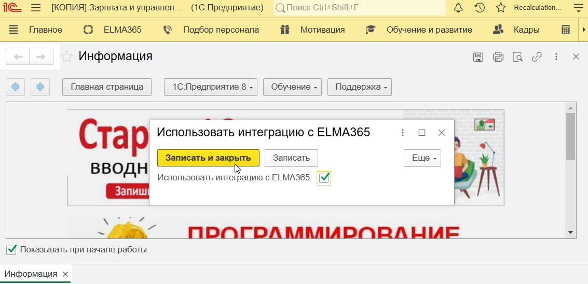
После этого в разделе ELMA365 появятся пункты, которые используются для настройки и обеспечения интеграции с системой.
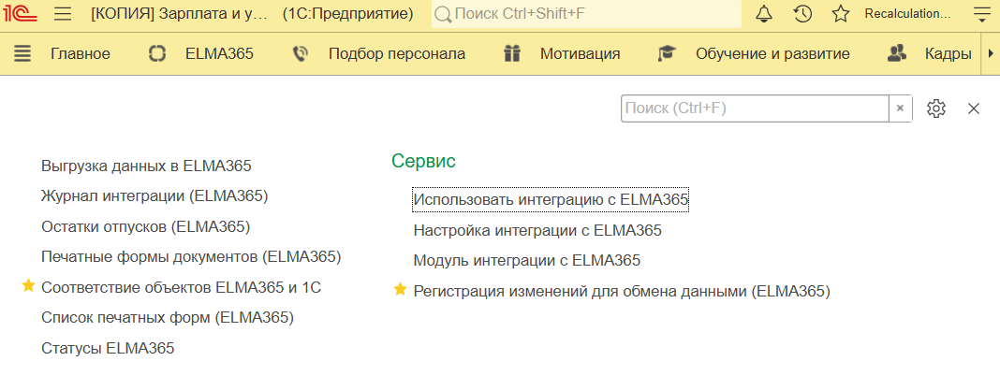
- При необходимости обновить расширение перейдите в раздел Администрирование > Печатные формы, отчеты и обработки > Расширения. В списке выберите ELMA365, нажмите Обновить из файла и загрузите файл с новой версией решения. Перезапустите программу 1С.
Настроить подключение к «ELMA365 КЭДО 3.0»
Подключите отправку документов из 1С в ELMA365. Для этого в программе 1С перейдите в раздел ELMA365 и выберите Настройка интеграции с ELMA365. Настройки на странице выполняются в следующих вкладках: Настройка печатных форм, Подключение и обмен данными, Функциональные настройки, Доступ.
Вкладка «Настройка печатных форм»
На этой вкладке настраивается автоматическая отправка печатных форм документов из 1С в ELMA365. Настройка выполняется опционально:
- В списке типов документов на вкладке отметьте флажком те записи, печатные формы которых необходимо отправлять в ELMA365.
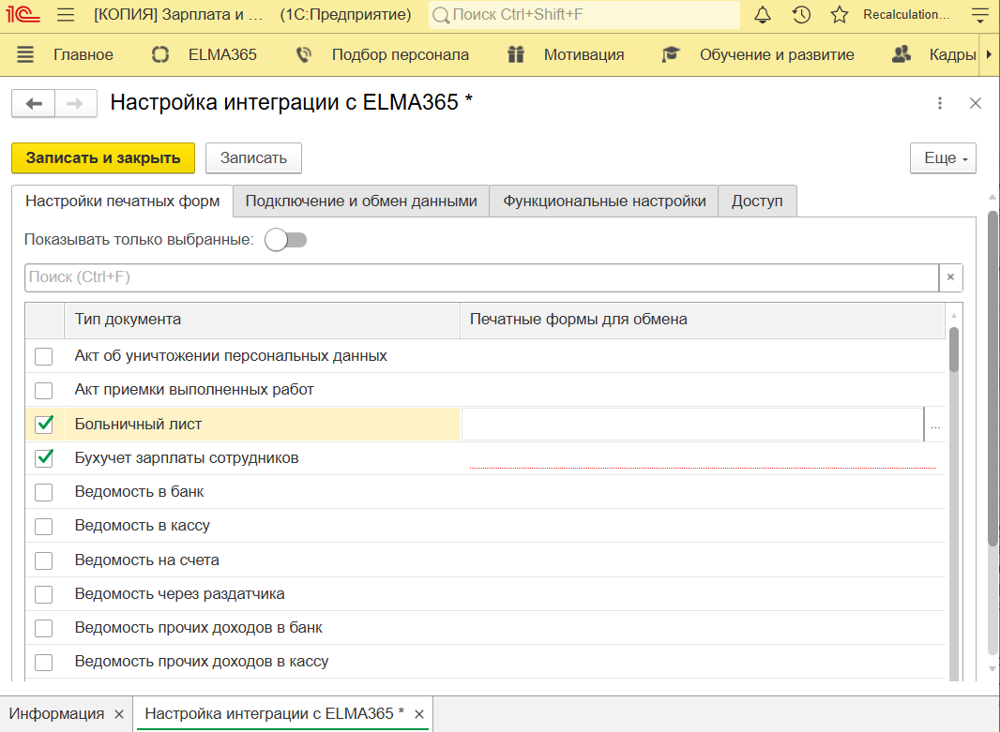
- Напротив каждого выбранного типа документа дважды нажмите на пустое поле в столбце Печатные формы для обмена. Затем нажмите на значок трёх точек и отметьте необходимые печатные формы. Подтвердите выбор документов.
Вкладка «Подключение и обмен данными»
На этой вкладке определяются общие настройки расширения. Заполните параметры:
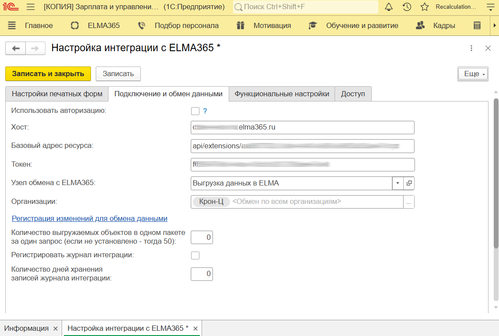
- Использовать авторизацию — опция включает проверку доступа к работе с установленным расширением в 1С. Если у пользователя есть карточка в ELMA365 в разделе КЭДО 3.0 > Физические лица, и он трудоустроен в указанной организации, он сможет отправлять запросы из 1С в ELMA365. При выключенной опции проверка не осуществляется, с расширением могут работать все пользователи;
- Хост — скопируйте значение в URL-адресе главной страницы вашей ELMA365 без https:// и вставьте в поле;
- Базовый адрес ресурса — укажите путь для доступа к Web API модуля интеграции с 1С в ELMA365 — Модуль КЭДО 3.0: api/extensions/a807392c-8afe-4d40-a980-a9883a03ae47/script;
- Токен — укажите токен для авторизации запросов к API ELMA365, созданный при выполнении первичных настроек решения. В ELMA365 перейдите в раздел КЭДО 3.0 > Меню настроек, найдите параметр Api-ключ для методов в модуле, скопируйте указанное в нём значение и перенесите его в это поле;
- Узел обмена с ELMA — выберите опцию Выгрузка данных в ELMA;
- Организация — выберите все юридические лица из базы 1С, данные по которым необходимо отправлять в ELMA365;
- Регистрация изменений для обмена данными — в отдельном окне определяется, какие данные будут передаваться автоматически из 1С в ELMA365: штатное расписание, список сотрудников и т. д. Настройка выполняется после полного подключения интеграции сервиса 1С и приведена в статье «Загрузить справочники и данные из 1С в ELMA365»;
- Количество выгружаемых объектов в одном пакете за один запрос — укажите, какое количество объектов (документов или других данных) будут передаваться из 1С в ELMA365 за один запрос. Рекомендуемое значение — не более 150 экземпляров для корректной работы процесса передачи;
- Регистрировать журнал интеграции — опция активирует сохранение результатов выгрузки данных в специальном журнале интеграции. С его помощью пользователи смогут отслеживать, какие объекты передаются в ELMA365. Если данные в базе 1С хранятся в файловом варианте, рекомендуем выключить опцию. Объекты не будут отправляться в ELMA365, если в журнале превышен допустимый объём сохранённых данных в 4 ГБ;
- Количество дней хранения записей журнала интеграции — если результаты выгрузки данных из 1С в ELMA365 фиксируются в журнале интеграции, укажите, через сколько дней информация будет удаляться. Настройка позволяет избежать превышение допустимого объема сохранённых в журнале данных.
После того как данные внесены, нажмите кнопку Записать.
Вкладка «Функциональные настройки»
Перейдите на вкладку Функциональные настройки и определите особенности обмена данными между 1С и ELMA365:
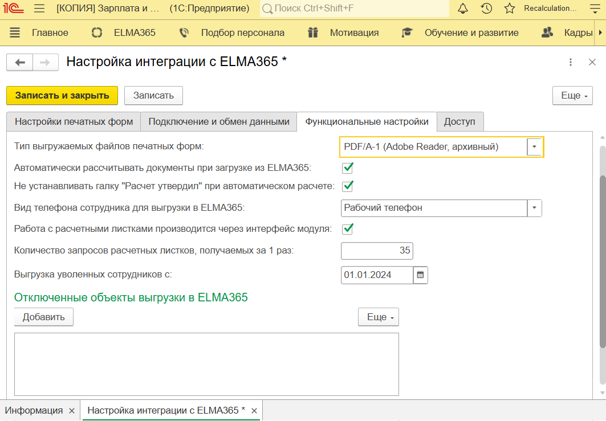
- Тип выгружаемых файлов печатных форм — укажите, для каких файлов будут формироваться печатные формы при обмене данными с ELMA365. Рекомендуемый вариант — опция PDF/A-1;
- Автоматически рассчитывать документы при загрузке из ELMA365 — включите опцию, чтобы в загруженных документах из ELMA365 (отпуска, оплата по среднему заработку, справки 2-НДФЛ) автоматически рассчитывались и подставлялись значения дополнительных полей из данных 1С. Например, в полученном заявлении на отпуск будут заполнены даты и суммы денежных средств для выплаты сотруднику. При выключенной опции загрузка документов в 1С происходит по расписанию и выполняется быстрее, однако бухгалтер заполняет поля вручную;
- Не устанавливать галку «Расчет утвердил» при автоматическом расчете — настройка доступна, если включена предыдущая опция, и в загруженных из ELMA365 документах дополнительные поля заполняются значениями из 1С. Поставьте флажок в этом поле, чтобы в документах появлялась отметка, что расчёт утверждён. Тогда бухгалтер увидит, что отправленный в 1С документ обработан специалистом по техническим расчётам;
- Вид телефона сотрудника для выгрузки в ELMA — выберите телефон (мобильный, рабочий или домашний), который будет передаваться из 1С в карточку сотрудника в ELMA365 в качестве контактного номера;
- Работа с расчетными листками производится через интерфейс модуля — включите опцию, чтобы бухгалтера могли работать с расчётными листами в программе 1С. В разделе ELMA365 появится дополнительная вкладка, на которой бухгалтера загружают листы, формируют по ним печатные формы, отправляют их сотрудникам и отслеживают их статусы;
- Количество запросов расчетных листков, получаемых за 1 раз — укажите, сколько расчётных листов из очереди будут передаваться из ELMA365 в 1С за один запрос. По окончании процесса передачи данных бухгалтер отправляет запрос повторно до тех пор, пока не увидит уведомление о загрузке всех доступных листов. Рекомендуемое значение — от 10 до 100 экземпляров;
- Выгрузка уволенных сотрудников с: — загружать в ELMA365 можно списки трудоустроенных и уволенных из организации сотрудников. В поле укажите дату, с которой уволены сотрудники, и их данные будут передаваться в систему;
- Отключенные объекты выгрузки в ELMA365 — вы можете указать сведения, которые не будут передаваться в ELMA365. Нажмите Добавить и выберите из списка нужные регистры. Чтобы отменить добавление объекта, выделите его, нажмите Еще и выберите Удалить;
Вкладка «Доступ»
Пользователи, трудоустроенные в определённой организации, могут работать в 1С только с относящимися к ней документами. На вкладке Доступ вы можете предоставить сотрудникам дополнительные права на документы по другим организациям.
Нажмите Добавить и выберите пользователя, который будет просматривать документы в 1С. В таблице напротив его имени укажите организацию, к документам которой необходимо предоставить доступ.
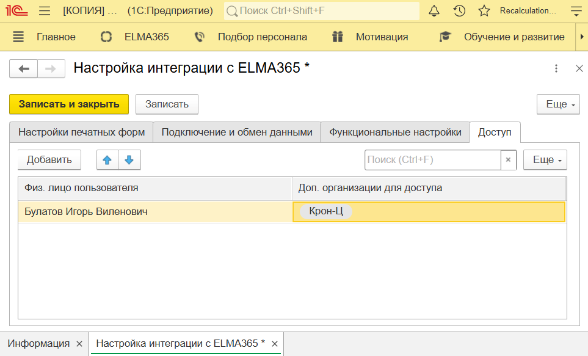
Когда вы указали настройки интеграции с ELMA365 на всех нужных вкладках, над их названиями нажмите кнопку Записать и закрыть.
Подключить внешнюю обработку данных
Настройте обработку данных, которые вносятся или изменяются в 1С, и отправку обновлённой информации в ELMA365.
- В 1С перейдите в раздел Администрирование > Печатные формы, отчеты и обработки.
- Убедитесь, что опция Дополнительные отчеты и обработки включена, и нажмите на ссылку напротив неё.

- В открывшемся окне нажмите Добавить из файла и подтвердите действие. На вашем компьютере найдите предоставленный менеджером ELMA365 .zip-файл с расширением для 1С, откройте его и выберите файл внешней обработки EM_ОбменСELMA. В 1С загрузятся файлы:
- Обмен с ELMA365 — после подключения обработки данные из 1С отправляются в ELMA365 КЭДО 3.0;
- Обновление статусов печатных форм ELMA365 — обеспечивает обновление данных для сформированных в 1С печатных форм после их подписания в ELMA365;
- Очистка устаревших записей журнала интеграции с ELMA365 — обеспечивает автоматическое удаление устаревшей информации в журнале интеграции, в котором фиксируются информация об обмене данными между 1С и ELMA365;
- Расчет отпусков сотрудников для обмена с ELMA365 — позволяет актуализировать в ELMA365 КЭДО информацию об оставшихся отпускных днях сотрудников;
- Формирование расчетных листков по запросам ELMA365 — позволяет формировать расчётные листы сотрудников и отправлять их в ELMA365 КЭДО.
- После загрузки нажмите Записать и закрыть вверху окна настройки обмена.
- Чтобы загрузить новую версию файла внешней обработки печатных форм, в окне Дополнительные отчеты и обработки дважды нажмите на название загруженного файла и выберите Обновить из файла.
Настроить синхронизацию данных по расписанию
Настройте обновление данных в ELMA365 по расписанию для каждого обработчика, загруженного из файла на предыдущем шаге. Если настройки не заданы, синхронизация выполняется вручную из программы 1С.
- Перейдите в Администрирование > Печатные формы, отчеты и обработки > Дополнительные отчеты и обработки и дважды нажмите на файл Обмен с ELMA.
- В строке с названием обработчика отметьте флажком опцию обновления по таймеру.
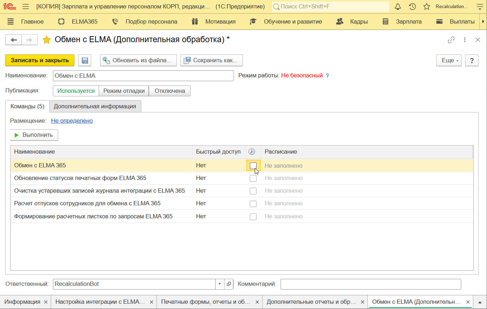
- В открывшемся окне задайте параметры.
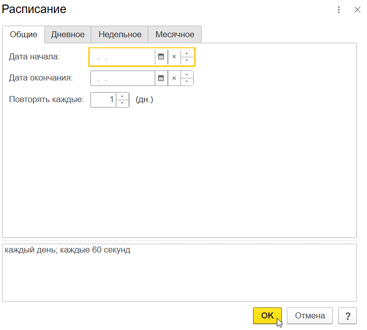
Рекомендуемые настройки для каждого обработчика:
- Обмен с ELMA365 — запускать обновление ежедневно, каждые 10 минут. Для этого:
- на вкладке Общие укажите Повторять каждые: 1 (дн.);
- на вкладке Дневное — Повторять через: 600 (сек.). В полях Время начала и Время окончания отметьте рабочие часы;
- на вкладке Недельное — выберите рабочие дни недели;
- Обновление статусов печатных форм ELMA365 — запускать обновление ежедневно, каждые 10 минут. На вкладках указываются настройки, как для предыдущего обработчика;
- Очистка устаревших записей журнала интеграции с ELMA365 — установить ежедневное обновление, каждый час. Можно указать больший интервал, в зависимости от объёма загружаемых данных;
- Расчет отпусков сотрудников для обмена с ELMA365 — запускать обновление ежедневно, рекомендуем указать также ночные часы для выполнения — ближе к началу рабочего дня;
- Формирование расчетных листков по запросам ELMA365 — настраивается в зависимости от рабочего процесса компании, например, в период, когда расчётные листки рассылаются сотрудникам.
- После указания параметров в окне настроек нажмите OK.
- Сохраните изменения, нажав Записать и закрыть. При этом процесс обработки данных запустится автоматически. Затем он будет выполняться по установленному расписанию.
- Чтобы посмотреть список отправленных данных, в 1C выберите раздел ELMA365 > Журнал интеграции (ELMA365). В интерфейсе ELMA365 отправленная информация фиксируются в разделе Интеграция 1С > Полученные данные в виде элементов приложения. Вы можете отследить обмен между двумя системами и при возникновении ошибки в передаче данных выявить её.
Настроить права доступа
Чтобы пользователи могли работать с расширением ELMA365 в 1С, настройте права доступа. Для этого:
- В 1С перейдите в раздел Администрирование > Настройки пользователей и прав.
- Добавьте профиль группы доступа — шаблон с определённым набором прав, по которому присваивается доступ пользователям. Для этого в открывшемся окне выберите Профили групп доступа.
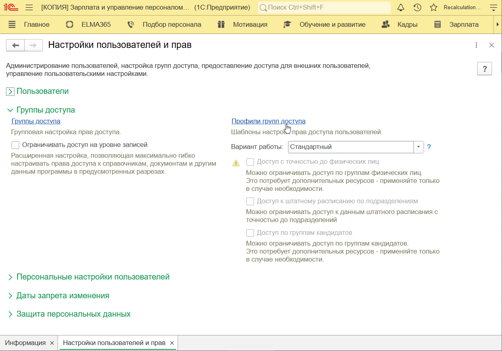
- На верхней панели нажмите Создать и укажите данные о группе:
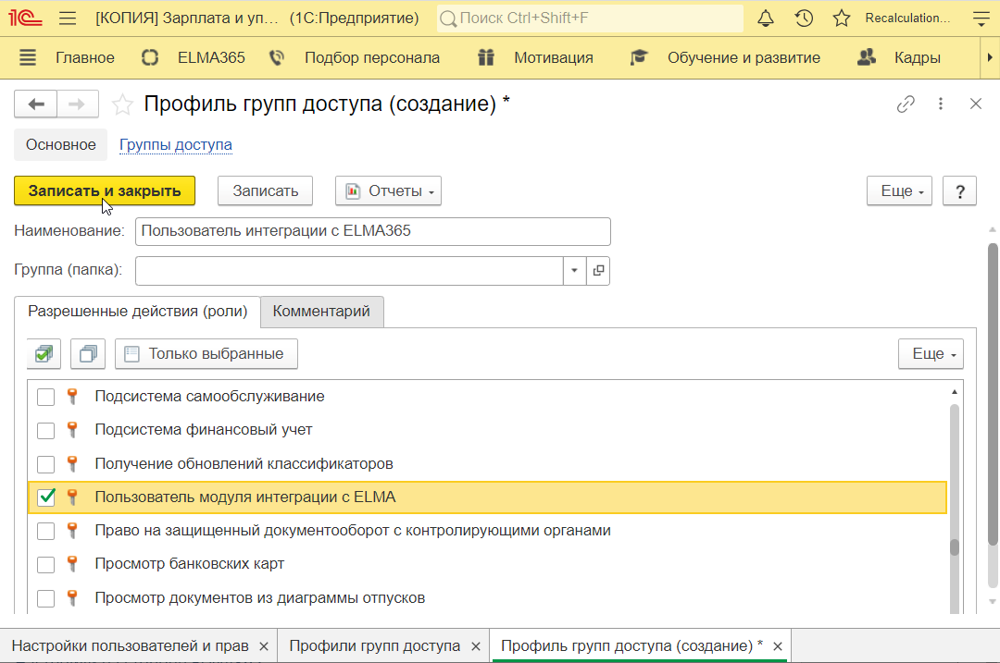
- в поле Наименование укажите название профиля группы доступа, например, Пользователь интеграции с ELMA365;
- ниже на вкладке Разрешенные действия (роли) отметьте опцию Пользователь модуля интеграции с ELMA.
- Нажмите Записать и закрыть.
- Затем добавьте группу, которой будут предоставляться права по созданному профилю. Для этого вернитесь в окно Настройки пользователей и прав и выберите Группы доступа. В открывшейся странице нажмите Создать и укажите данные:
- в поле Наименование укажите название группы — Пользователь интеграции с ELMA365;
- в поле Профиль выберите из списка созданный ранее профиль, например, Пользователь модуля интеграции с ELMA365.
- На вкладке Участники группы нажмите кнопку Подобрать. В открывшемся окне выберите сотрудников, которым будет предоставлен доступ к разделу ELMA365 в 1С, и перенесите их в список справа.
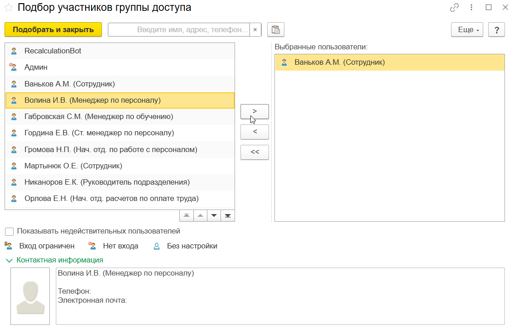
Чтобы закрыть окно выбора сотрудников с доступом, нажмите Подобрать и закрыть.
- Для сохранения настроек группы доступа нажмите Записать и закрыть вверху окна.